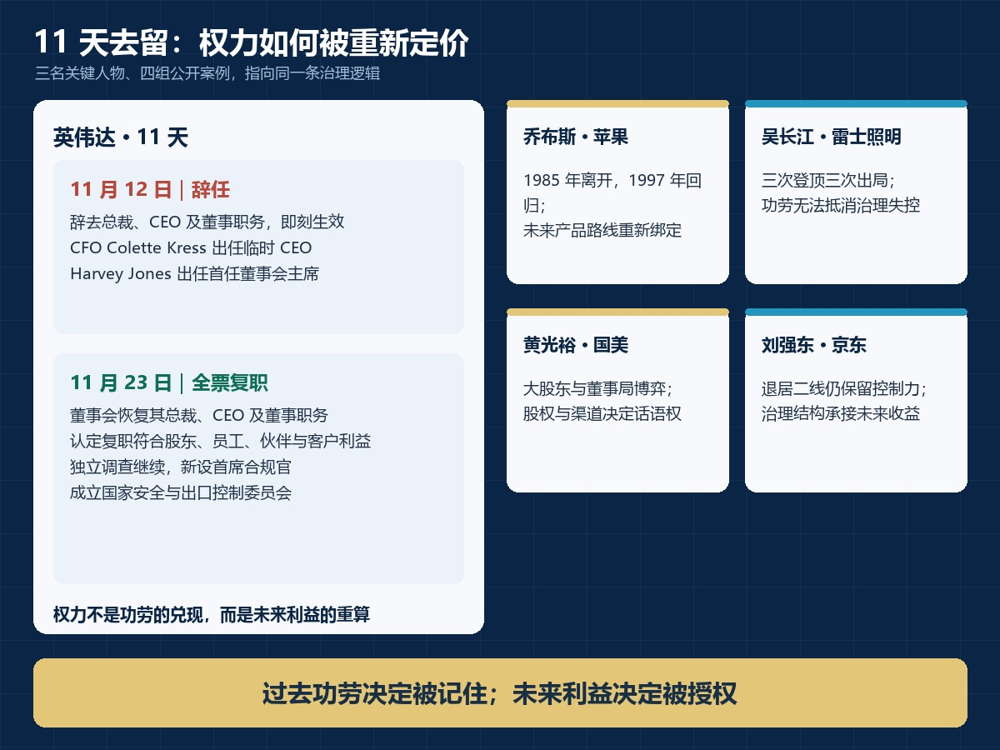

11 月 12 日，英伟达董事会宣布黄仁勋辞去总裁、首席执行官及董事职务，即刻生效；首席财务官 Colette Kress 出任临时首席执行官，Harvey C. Jones 出任首任董事会主席。11 月 23 日，董事会又全票通过决议，恢复黄仁勋上述全部职务。中间只隔了 11 天。
这 11 天提出了一个比人事变动更值得研究的问题：一个陪伴公司 33 年、把英伟达带到加速计算和 AI 核心位置的人，一个让员工、股东、客户和产业伙伴长期受益的人，为什么不能天然拥有本该属于他的权力？答案并不复杂：功劳证明的是过去，权力绑定的是未来。治理结构里的权力，从来不是对历史贡献的奖章，而是各方对未来收益、风险和替代成本共同计算后的结果。

一、事实层面：11 天里发生了什么
11 月 12 日的官方公告措辞克制。董事会宣布黄仁勋辞去总裁、CEO 和董事职务，同时强调他对公司的贡献“极其深远”，感谢其“不可估量的贡献”。公司没有在公告中展开说明辞任原因，而是启动正式 CEO 遴选程序，并安排熟悉业务、客户、运营和财务状况的 CFO 接任临时 CEO，同时首次设立董事会主席职位。
11 月 23 日的复职公告提供了更多治理信息。董事会表示，在与黄仁勋多轮沟通后，对其坦诚态度和领导能力表示满意，并全票通过复职决议；董事会认为复职符合股东、员工、合作伙伴和客户的最佳利益。公告还披露，在决策过程中听取了美国政府高层意见，并基于这些意见认为复职不会构成国家安全风险。
复职并不等于风险消失。公告同时明确，此前因近期有关黄仁勋成为境外情报行动目标的报道而成立的独立董事调查委员会，将继续完成调查；董事会新设由独立董事组成的国家安全与出口控制委员会，并启动首席合规官遴选。换句话说，权力被归还的同时，也被重新装进了合规与监督的框架里。
资本市场对这条消息给出了直接反应。11 月 23 日英伟达美股盘前一度上涨超过 25%，市场用价格表达对「关键人回归」的估值。但价格反应只是结果，真正值得追问的是：为什么此前已经写进功劳簿的人，仍需要重新获得授权？
二、分析：权力不来自过去，而来自未来的利益交集
第一，历史贡献是声誉资产，不是治理权利。黄仁勋 1993 年参与创立英伟达，33 年间把公司做成 AI 芯片与加速计算的关键企业。这些贡献可以赢得尊重、舆论支持和市场信任，但不能自动转化为董事会席位和 CEO 职权。公司治理的基本逻辑是：今天的授权必须回答明天由谁承担结果。功劳簿回答不了这个问题。
第二，权力来自各方未来利益的交集。董事会要权衡股东回报、客户稳定、员工士气、合作伙伴信心与监管风险；员工要判断谁能带领公司继续产出有竞争力的产品；客户和开发者要判断技术路线是否连续；政府与监管机构关心出口控制和国家安全。当这些主体共同认为「他留下来比换掉他更有利」时，权力才会回来。11 天里发生的变化，本质上是各方对未来收益和替代成本的一次集中重算。
第三，可替代性决定议价权。临时 CEO 可以维持财务和运营连续性，董事会也可以启动内外部候选人遴选，但英伟达的产品路线、开发者生态、客户关系和技术叙事高度依赖长期积累的组织能力。若更换领导者带来的不确定性大于继续领导的治理风险，关键人的议价权就会迅速回升。权力不是「谁做过最多」，而是「未来少了谁的成本最高」。
第四，风险需要被制度化封装。复职公告没有取消调查，而是叠加了独立调查委员会、国家安全与出口控制委员会和首席合规官安排。这说明未来的利益绑定并不等于无条件信任，而是「收益继续共享、风险重新定价、边界重新划清」。一个创始人的权力要长期成立，不能只靠个人能力，还要能被治理结构解释、被合规框架承接。
三、案例：同一逻辑的不同结局
乔布斯与苹果是最经典的回归案例。1985 年，乔布斯在权力斗争中离开自己创立的公司；1997 年苹果收购 NeXT，他重新回到董事会并逐步掌舵。苹果当时需要的不是一位资历更深的职业经理人，而是一个能够重新定义产品、重整生态、让市场相信未来的人。过去创业功劳当然重要，但真正促成回归的，是当时苹果的未来利益与他的能力再次绑定。
雷士照明的吴长江提供了反向样本。他曾三次把企业推上高峰，却也三次出局。销售渠道、资本方、董事会与创业者的关系不断破裂，核心不是他有没有功劳，而是后续治理中信任、规则和控制权无法形成稳定绑定。当各方判断继续授权带来的风险大于收益时，历史贡献无法阻止出局。
国美电器的黄光裕与陈晓之争，同样说明了股权、渠道与未来收益的关系。创始人即使因个人原因无法直接履职，仍可依靠大股东身份和渠道控制力影响公司；职业经理人即使掌握董事会和管理权，若不能证明自己能代表未来收益，也难以长期站稳。权力不是职位的附属品，而是利益结构的投影。
京东的刘强东则展示了另一种制度安排。在一系列个人与舆论风险之后，他逐步退居二线，却通过股权与投票权安排保持对公司的长期影响力。这里的重点不是个人去留，而是公司把创始人的长期判断转化为可执行的治理权利，同时由职业经理人团队承担日常经营。未来收益仍与创始人绑定，经营权则由制度分层承接。
四、趋势判断：从个人英雄到可审计的绑定
第一，创始人和核心高管的权力将越来越依赖可验证的未来贡献。过去的上市神话、增长纪录和行业地位仍会被尊重，但董事会和股东会更关心未来三到五年的技术路线、客户留存、组织稳定和资本回报。影响力如果不能转化为可预期的未来收益，就会在治理压力下很快贬值。
第二，董事会会从「看履历」转向「设计绑定机制」。股权、投票权、董事会席位、继任计划、合规边界和长期激励，本质上都是未来利益绑定工具。英伟达此次复职同时叠加合规安排，说明成熟治理不是简单选择「信谁」，而是把信任拆成可监督的条款。未来更多科技公司会采用这种「回归+约束」的组合。
第三，地缘政治与国家安全会成为技术公司治理的显性变量。AI 芯片、先进计算和跨境供应链已不只是商业问题。企业核心人物能否继续掌舵，可能同时取决于董事会、资本市场与政府监管对风险的评价。未来的 CEO 不仅要交付业绩，还要具备合规治理和全球经营的解释能力。
第四，对粤港澳大湾区而言，这一逻辑同样适用于产业与教育合作。研究院长期观察到的现象是：一个项目能否持续，不取决于启动仪式上谁站到台前，而取决于院校、企业、科研平台和政府之间能否形成长期的利益绑定——学生就业、技术转化、产业订单和成果分配能否持续兑现。只靠个人情怀或一次签约，很难支撑长期产教融合。
结语
黄仁勋的 11 天去留，给了一个很直接的提醒：功劳让人被记住，未来利益让人被授权。一个立下汗马功劳的人，如果不理解权力背后的利益结构，可能会在治理变化面前措手不及；一家公司如果只是消耗创始人的历史贡献，而不设计面向未来的绑定机制，也会在关键节点失去稳定。
真正成熟的组织，既不会忘记过去的贡献，也不会把未来交给单纯的感情。它会让每个人的权力都有清晰的利益基础、责任边界和监督机制。这样，当风波来临，公司才不会只靠一个人的去留来决定命运。
本文所引事实来自英伟达官方公告及公开报道，相关分析为治理逻辑研判，不构成投资建议。